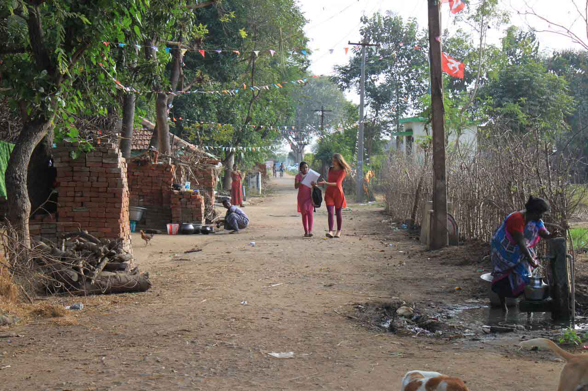
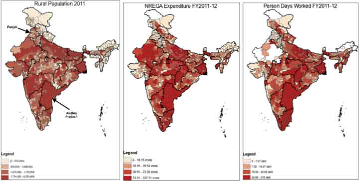

-

- A challenge
- Auditing the Government of India
- Recommendation #1
- Recommendation #2
- Recommendation #3
- Proof of concept
-
Based on a project which was partly funded by UK aid. All photographs copyright Evidence for Policy Design.
If you have questions or comments, please contact us.
BCURE: Insights on methodology for India’s governmental auditors
by Evidence for Policy Design
September 2016
In a multi-year engagement, researchers from Evidence for Policy Design advised some of India’s lead governmental auditors on advanced methods to use in their work. This case study introduces the methods and highlights how establishing data flows between branches of government can improve the rigor of audits and increase transparency.
A challenge
Imagine that you are charged with a very big, very important task: evaluate the effectiveness of India’s largest antipoverty program for the rural poor. Taxpayers want to know if their money is being spent effectively, and it’s a lot of money – roughly 3.39 trillion rupees ($50.5 billion) over the last decade. How would you do it?
In an ideal world, you’d gather together all the relevant data on program implementation across all 600-plus districts in India’s 34 states and Union Territories, crunch the numbers, and see how they look. But this is not an ideal world. Your time and resources are limited, so you have to choose a subset of districts where implementation of the program will reflect that across the country as a whole. How do you select the districts to audit?
You know that the only way to avoid bias-related errors in such an evaluation is to choose the districts randomly. So you decide to take all those districts, put them in a hat (so to speak) and draw out however many you can afford to audit. Then you audit them, multiply your results to reflect the whole country, and that should produce a fair assessment.
If you took this approach, you’d be doing pretty well, according to the guidelines of the Comptroller and Auditor General, or CAG, the body within the Government of India charged with actually conducting such performance evaluations. The CAG used this method to select districts to audit during a countrywide evaluation of the MGNREGA workfare programme in 2013.
But recall that this is a program for the rural poor. You took all of India’s districts and threw them in the hat, and a large percentage were too urban or too wealthy to contain many recipients. Wasn’t auditing those districts be a waste of resources?
Now add this: if you have a quick look at data routinely collected in the program’s database, you see certain red flags. Beneficiaries of a workfare program must log in “person days” of work to receive payment, and in a few districts, program expenditures far exceed the number of recorded person days. It looks like fraud, but it escaped your analysis since it only happened in a few districts, and they stayed in the hat when you made your random draw.
This question – how best to approach an audit of MGNREGA – was exactly the one that senior officials at the CAG posed to researchers at Evidence for Policy Design (EPoD) in 2014. The two organizations were attempting to find common areas of focus for a possible multi-year engagement, so the CAG gave the Harvard-based group an audit they had already conducted and asked how they would have done it differently. EPoD produced an Evidence Brief detailing how, if the auditors had used an alternative sampling method, they would have been able to pay special attention to both the districts with a large eligible population and the “red flag” districts, and still preserve the random nature and geographical breadth of the sample. We describe the method below.
EPoD continued its collaboration with auditors from the CAG over the following two years. As part of the Building Capacity to Use Research Evidence (BCURE) program, funded by UK Aid, the researchers provided technical assistance on two live audits in 2015. They also conducted trainings of the CAG’s Indian Audits and Accounts Service officers, assisted in writing survey questionnaires, and trained field surveyors in new, tablet-based methods.
In this case study, we will track the first steps in the collaboration and introduce the sampling methods and other changes in practice that EPoD suggested to the CAG. Advanced approaches to data analysis may seem obtuse and difficult for policymakers to grasp, yet they can empower direct improvements to the efficiency of government processes. In rich countries, governments have the resources to disseminate new methods to their staff – finding ways to show their value to policy actors in developing countries is the essence of this pilot project, and of the BCURE agenda as a whole.
Auditing the Government of India
The office of the Comptroller and Auditor General is a large body within the Government of India with an important mandate. Employing 43,000 people across the country, it serves as the internal watchdog, able to audit any program the government spends money on, from state-level construction projects to the world’s largest workfare program as described above.
In a January 2016 interview, Kapavarapu Ganga, then Deputy Comptroller and Auditor General, explained what an audit entails. “It’s a huge exercise of resource mobilization, a huge engagement with the entity that is carrying out the policy” – which she calls the executive – “typically a yearlong exercise.” The CAG’s reports go to the Indian legislature, then filter upward through committees to the president’s desk, and finally are released to the public. They tend to get a good deal of attention within government and in the media, not least because the CAG has uncovered some of India’s most famous scams, such as the 2G spectrum scandal of 2008, which involved government officials steeply discounting telecoms licenses in return for bribes. But even in its lower-profile audits, the CAG has a wide reach and an important voice in Indian policy.
In their position, CAG auditors must continually show value. With several large-scale audits going at once, waiting for research results is not an option. So when senior officials began exploring the possibility of a collaboration with EPoD in 2013, much of what the Harvard-based researchers did seemed outside the CAG’s use. “You look for perfection, we look for practicality,” Meenakshi Sharma, then Director General of the Professional Practices Group, said in the interview. “If we keep looking for the perfect solution, by the time it comes, the need has passed and we have lost the window of opportunity.”
However, the two groups eventually found common ground where research methods could inform the CAG’s practice.
The agency conducts three types of audits: financial audits (reviewing a programme’s ledgers), compliance audits (checking to make sure the letter of the policy is being followed), and the newest type, the performance audit. According to the guidelines, “Performance audit evaluates the efficiency, economy and effectiveness of a given entity or program, in an effort to move beyond financial compliance and cope with the intricate questions of measuring the performance and results of [India’s] huge investments and expenditure.” EPoD researchers and CAG auditors agreed that the performance audit showed the greatest possibility for crossover. For EPoD, it was the type that most resembled impact evaluations they and other research organizations are in the business of conducting. And for the CAG’s leadership, performance audits had long presented an opportunity to go a step further than their standard function of catching inefficiency and malfeasance, and provide the government with finer analyses to guide improvements.
Recommendation #1: Use rigorous sampling methods
The first leg of the collaboration was for EPoD to review a completed performance audit and propose changes in methodology. As mentioned above, EPoD suggested revamping the sampling method, but let’s have a closer look at just what that means.
The CAG’s guidelines required that the selected sample be representative of the entire population, unbiased, and of sufficient size to extrapolate results to all of India – all solid requirements, of course. To accomplish this, auditors randomly selected districts, ensuring that each district in India was equally likely to be selected for audit.
EPoD suggested using stratified sampling. In this method, auditors would create groups (or strata) with no crossover, and then randomly sample from within those groups, thus fulfilling the random requirement. EPoD suggested basing the stratification on any or all of three indicators readily available in administrative data: rural population, MGNREGA expenditure, and person days worked.
If auditors stratified based on rural population, for example, they might divide all districts into four groups of increasing numbers of rural citizens and sample most heavily from the quarter with the greatest number. That would ensure that the larger the targeted population in a district, the higher the probability of audit. In the scenario EPoD constructed, districts in the highest quarter would face a 0.56 probability of being audited, those in the lowest, a 0.06 probability.
This would give auditors a much better view of how the programme worked in the areas that needed it the most. For example, as you can see on the maps above, the state of Andhra Pradesh had a large rural population and high level of MGNREGA spending. Clearly, this was a state where programme implementation mattered to many people’s lives. In the actual 2013 performance audit, only four of Andhra Pradesh’s 22 districts were selected for review. Stratification would have resulted in between 12 and 16 districts being audited.
To extrapolate back to the entire population, auditors would then use post-stratification weights – meaning, that those few districts audited from that lowest-rural-population quarter would be given greater weight in the calculations. This would allow the final audit to speak about the population as a whole, while being able to examine the rural population in greater detail.
Stratified sampling is a flexible mechanism. If, for example, auditors wanted to stratify based on red flags – those districts that showed irregularities in spending patterns versus days worked – they could stratify districts based on the gap between those numbers, audit 100% of districts in the most irregular stratum, then reweight accordingly. These methods are not revolutionary – in fact, they were already being used in the CAG’s financial audits. EPoD’s insight was simply to bring a rigorous quantitative technique to the evaluation of programme effectiveness.
Recommendation #2: Set narrower audit objectives to achieve deeper insights
In the next leg of the collaboration, EPoD consulted the CAG on live audits in order to test methods for wider use. The first of these two focused on Social Security programmes in the state of Kerala, implemented on the lowest levels, down to the village. The goal was to analyse the effectiveness of a statewide system that gave pensions to groups in need, including senior citizens, widows, and disabled citizens – around 2.8 million recipients, according to the state’s Auditor General.
Support from DFID under the BCURE initiative allowed EPoD to send Harvard PhD students and EPoD India staff to Kerala. “In our normal way of doing things,” Sharma explained, “the audit objective would be quite wide: Did it or didn’t it work?” The EPoD team observed that if the auditors narrowed their initial questions, they would be able to conduct a more detailed and accurate audit.
How to determine the best questions to ask? The EPoD team consulted existing data sources. Comparing administrative data from the Social Security program with census data revealed discrepancies in potentially eligible populations (e.g. those above a certain age or below a certain income) and populations receiving the pensions. So, rather than, “Did it or didn’t it work?” the researchers recommended asking three much more specific questions: “Who was receiving pensions that shouldn’t be?” (thus identifying inclusion errors); “Who wasn’t receiving pensions that should be?” (identifying exclusion errors); and “Were payments made on time?” The auditors could then use techniques such as oversampling of certain strata and more detailed surveys to uncover the reasons behind the inclusion and exclusion errors and delays. It was as if the auditors were archaeologists, and choosing a smaller plot to excavate would allow them to dig much deeper.
Over the summer of 2015, EPoD staff provided inputs as auditors designed the questionnaire and implemented surveys conducted with electronic tablets – a first for the local CAG office. With public programs in India that are delivered at the lowest levels, there is always the possibility of misuse for personal or political motives. The village councillor who was charged with distributing funds might hold onto them until election time, then bestow them on beneficiaries as if they were gifts. The more detailed questionnaire could capture these temporal nuances (and compare this to programmatic data to speak to its quality), and also capture whether intended recipients were even aware that they were entitled to a pension.
“We decided to use evidence even at the initial stage, even before we hit the ground,” Ganga explained. Zeroing in on inclusion and exclusion errors as indicators for how the pensions program was managed amounts to hypothesis-creation. If the auditor’s purpose is to only to spotlight gaps in implementation then hypotheses are irrelevant, but if her purpose is to make targeted recommendations for improvement, they are essential.
To look at such a vast ministry and ask, Did it or didn’t it work? would tell the government little. One way to break down this massive undertaking is to choose certain metrics and look for inconsistencies between geographical areas. As with gaps in the data on MGNREGA, using existing data on health outcomes would let auditors stratify the sample and look more closely at the worst- (and perhaps best-) performing areas. This requires using data from a third party at an early stage in the audit.
CAG auditors were accustomed to using evidence to set their audit objectives, but it usually came from two sources. The first was other CAG audits; for example, a financial audit might uncover underspending or overspending which could inform a performance audit. The second source was the ministry being audited – the “executive.” The problem with depending on these two sources was that it risked compounding its errors rather than catching them – or in Ganga’s words, “to go with the flow of decisions already taken by the executive.” If the NRHM were erroneously spending money on an unneeded programme to the exclusion of a better one, then the CAG would never catch it because its inquiry would follow the direction of the spending.
Recommendation #3: Use data from outside the audited programme
The Kerala Social Security programme is an example of the lowest-level programme the CAG audits. The next project that EPoD assisted the CAG with was at the opposite end of the spectrum: an audit of the National Rural Health Mission, or NRHM, an agency founded in 2005 to consolidate all of India’s various public health schemes targeting underserved areas.
As part of the BCURE-funded pilot, the EPoD team analysed three large-scale governmental surveys and merged health data into a single dataset. In combination with a literature review, this allowed the CAG-EPoD team to formulate four specific questions for the NRHM audit, capturing indicators such as the proportion of facilities that meet standards, and the programme’s provision of healthcare services relevant to maternal and child health.
In the interview, Sharma linked this point back to the Kerala audit: “We want to examine why certain people are excluded. Exclusion would be very difficult to understand if we just followed what the executive was doing.” Ganga picked up the thought: “Because the executive has a database of only those who receive pensions – they do not have the universe. So if I want to know if the executive has excluded people, and I go by their database, I will never know it.”
In Kerala this meant holding data from the Social Security programme up to data from India’s Below Poverty Line (BPL) survey, as well as interviews with potential beneficiaries who weren’t receiving the programme. Charity Troyer Moore, Director of EPoD India, says this was one of the most important collaborations between EPoD and the CAG. “To my knowledge,” she says, “the CAG has never interviewed eligible non-beneficiaries in audit surveys, so getting them to do this was a major step forward.”
Proof of concept
A central goal of the BCURE pilot projects is to present policymakers with examples of how using evidence can help them do their jobs more effectively. In this instance, the BCURE Harvard team had the luxury of working with auditors – evidence experts, essentially. A central task was, then, to present the latest methods to senior auditors.
But another task – and perhaps the most important – was to show that removing barriers between governmental bodies would improve outcomes. Recall that some of the methods EPoD researchers recommended for performance audits were already in use in financial audits, and that all of the data used to identify questions and narrow objectives was readily available from other branches of government. The elements of best practice were there, just separated by department walls. If this is the situation broadly in developing countries, then building channels of communication between government actors is as important as building up their skills.
Text by V. McIntyre. Design by Angela Ambroz.